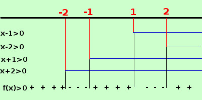

soluzione
y = √(x
4
- 5x
2
+ 4)
x
4
- 5x
2
+ 4 ≥ 0
scompongo il polinomio
(x-1)(x+1)(x-2)(x+2) ≥ 0
Faccio il grafico per trovare i valori positivi

x ≤ -2 ∪ -1 ≤ x ≤ 1 ∪ x ≥ 2
C.E. = {
x ∈ R / x ≤ -2 ∪ -1 ≤ x ≤ 1 ∪ x ≥ 2
}